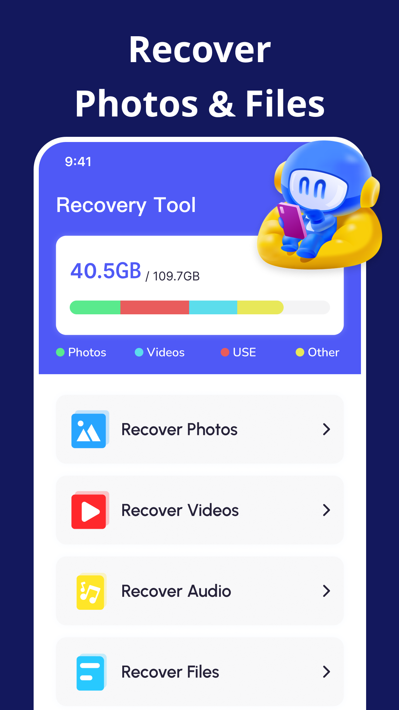
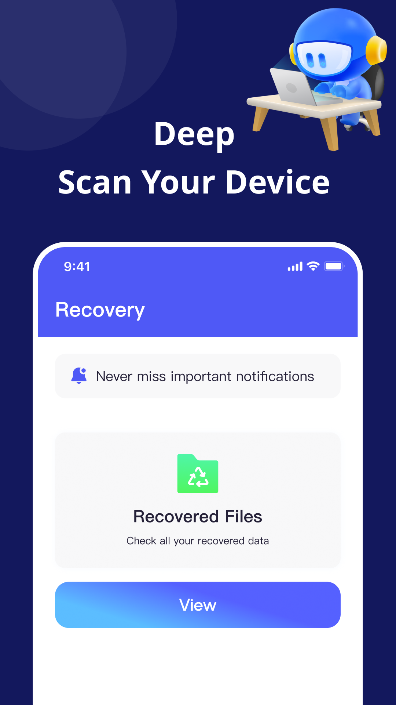
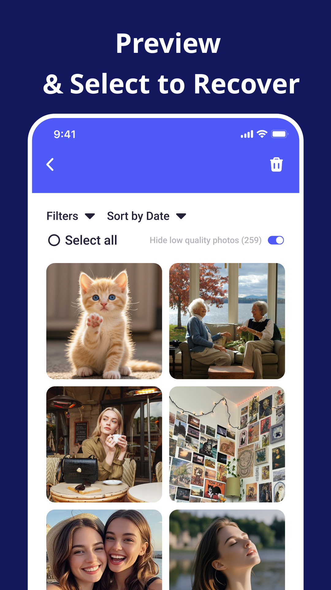
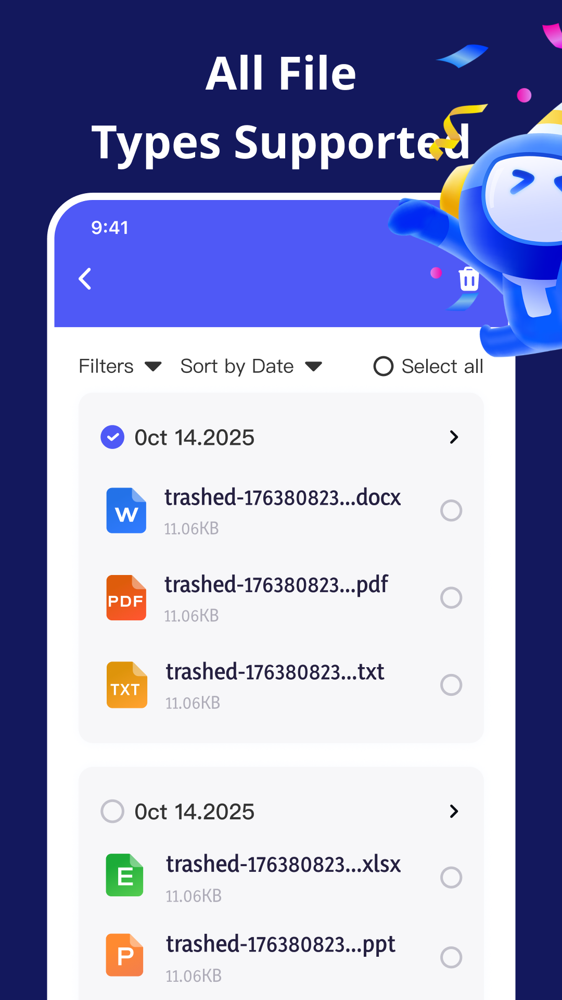

AI Restore
Recover deleted photos, videos, audio, and files.
File Recovery - AI Restore scans your device deeply, helps you preview recoverable data, and lets you restore the files that matter without a complicated workflow.
- Deep Scan
- Preview First
- Private Restore

Recover More
Photos, videos, audio, documents, and everyday files.
Preview & Select
Review scan results before restoring what you need.
Recover photos
Find deleted images, browse previews, filter low-quality results, and restore meaningful memories.
Recover videos
Scan for removed video files and bring back clips from moments you thought were gone.
Recover audio
Restore audio files and recordings with a focused recovery workflow built for quick decisions.
Recover documents
Support common file types including documents, spreadsheets, presentations, PDFs, and text files.
Product Gallery
Five views into the File Recovery - AI Restore experience.
The gallery shows the core recovery flow: scan your device, preview deleted content, select files, recover multiple file types, and restore privately.
Recovery Tool
Recover Photos & Files
Start with a clear file recovery dashboard for photos, videos, audio, and files.
Deep Scan
Scan Your Device
Search deeply for deleted items and keep recovered data easy to review.

Preview
Select to Recover
Browse photo previews, apply filters, and choose the exact files to restore.

File Types
All File Types Supported
Recover documents, PDFs, spreadsheets, presentations, and more file formats.
Private Restore
Fast, Safe & Private
Restore selected files through a clean process designed for everyday confidence.
Privacy & Safety
Built for careful recovery when deleted files still matter.
Preview before restore
Review scan results first, then recover only the files you actually want back.
Organized file selection
Use categories, filters, dates, and file type views to move through recovery results quickly.
Private recovery flow
Keep the restore process focused on your device and your selected files.